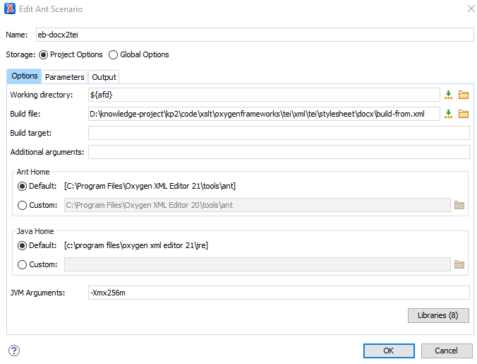

Work in batches
again, using the eb-docx2tei.xsl script.
For the page section you are converting, move the page-inventory file from
ebnn to the appropriate section folder in
outputs/page.
Select the appropriate 2-page-docx folder in the
Oxygen XML EditorProject window.
Right-click the folder and select Transform > Configure transformation scenarios…
If the eb-docx2tei ANT scenario does not appear in
the Project section of the main window, you will need
to import it before
proceeding.
If the eb-docx2tei ANT scenario does appear,
proceed as follows.
Confirm the settings for eb-docx2tei.xsl as follows.
In the Project section, select the
eb-docx2tei ANT scenario.
Figure 1. The Configure Transformation Scenario(s)
window.
Click Edit to edit the scenario.
Figure 2. The Edit Ant Scenario window

Make sure the Project Options button is checked.
On the Options tab, set the working director to
${afd}.
The build file is located in
D:\knowledge-project\output\code\xslt\oxygenframeworks\tei\xml\tei\stylesheet\docx\build-from.xml.
Check that the rest of the settings are identical to those shown above.
Open the Parameters tab. The five parameters should appear
as in the following image.
Figure 3. The Parameters tab. Pay attention to the outputFile parameter. This
sets the path for the output files, and it should read:
${cfd}/../3-page-tei/${afn}.xml.
Open the Output tab.
Figure 4. The Output tab.
This tab tells Oxygen whether or not to open the output
file for you. If you are transforming multiple files, you will not want them
opened, so leave these boxes unchecked. However, if you are running a single
file and want to check the results immediately, check In System
Application. The Open: field should read
${cfd}/../3-page-tei/${afn}.xml.
Click OK to close the Edit Ant
Scenario window and return to the Configure Transformation
Scenario(s) dialogue.
Click Apply associated to run the scenario on the
selected files and save the results in the 3-page-tei
folder.
Validate all of the new XML files in the
3-page-tei folder. To do this, select all of the new files
in the OxygenProject
window. Right-click, Validate > Validate.
The transformation is complete.
You may encounter errors at this stage. This should be rare,
and the errors should be relatively simple. A basic knowledge of
TEI is all that is needed to correct them
manually. If you are not sure, please ask. If no one can help you, make a note
of the pages with errors and leave it for the person in
charge.